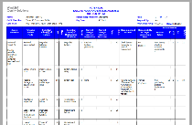

A Failure Mode and Effects Analysis (FMEA) can basically be classified into one of three possible types: process, functional, or component. All three of these FMEA types assess the impact of failures on system performance and safety to determine which failure modes require efforts to prevent, mitigate, or detect occurrence. The selection of a particular FMEA type indicates the intended scope of the analysis.
For example, you might choose to limit your assessment of possible failures to those that can occur during the manufacturing or assembly process of a product. Or, you might choose to limit it to failures that prevent you from meeting the functional requirements for a product design. When a comprehensive assessment of a product design is required, you will not want to limit your assessment in any manner but rather consider all possible failure modes for all system components. Your choice of the type of FMEA to create will result in the appropriate framework being set up for your assessment.
Overview of FMEA Types
To be able to choose the appropriate FMEA type, you need to fully understand how the three types differ from one another.
- Process FMEA.Examines the ways that failures in a manufacturing or assembly process can affect the operation and quality of a product or service. A process FMEA can be performed at any level to evaluate possible failure modes in the process and limitations in equipment, tooling, gauges, or operator training. The information collected can help to determine what can be done to prevent potential failures prior to the first production run. You can then take actions to reduce your exposure to risks deemed unacceptable.
- Functional FMEA. Examines the intended functions that a product, process, or service is to perform rather than the characteristics of the specific implementation. When a functional FMEA is developed, a functional block diagram is typically used to identify the top-level failures for each block in the diagram. For example, a functional FMEA would consider that a capacitor is intended to regulate voltage and then analyze the effects of the capacitor failing to regulate voltage. It would not analyze what would occur if the capacitor fails open or fails shorted.
- Component FMEA.Examines the characteristics of a specific implementation to ensure that the design complies with requirements for failures that can cause loss of end-item function, single-point failures, and fault detection and isolation. Once individual items of a system (piece-parts, software routines, or process steps) are identified in the later design and development phases, component FMEAs can assess the causes and effects of failure modes on the lowest-level system items. Component FMEAs for hardware, commonly referred to as piece-part FMEAs, are the most common type.
FMEA Process
A Failure Mode and Effects Analysis (FMEA) can basically be classified into one of three possible types: process, functional, or component. All three of these FMEA types assess the impact of failures on system performance and safety to determine which failure modes require efforts to prevent, mitigate, or detect occurrence. The selection of a particular FMEA type indicates the intended scope of the analysis.
FMEA Standards
FMEA standards provide general FMEA forms and documents, identify criteria for the quantification of the risk associated with potential failures, and offer general guidelines on the mechanics of completing FMEAs. Many different FMEA standards are available to support the evaluation of hardware systems, process control systems, software, and more. Some industries prefer certain FMEA standards. Aerospace and defense companies generally use either the MIL-STD-1629 FMECA or SAE ARP5580 FMEA standard. Automotive suppliers use the SAE J1739 standard or the Automotive Industry Action Group (AIAG), DaimlerChrysler, Ford, or GM FMEA automotive standards. Other industries typically adopt one of these standards, sometimes customizing it to meet their own requirements. Windchill FMEA supports all common FMEA standards and provides for easily customizing them or combining them to meet your own unique needs.
Summary
 Lastly, a risk
level assessment technique is introduced in the book FMEA - Failure Modes &
Effect Analysis - Predicting & Preventing Problems Before They Occur by Paul Palady. This
approach allows the analyst to group failure modes into established categories to ensure that
the most critical items are evaluated. A graphical representation is used, where the x axis is a
specified risk value such as severity. The y axis is a secondary risk factor such as occurrence.
The graph is broken into three distinct areas by lines that intersect both axes. By then
graphing each failure mode, they will fall into one of the three graph areas: high, medium, or
low.
Lastly, a risk
level assessment technique is introduced in the book FMEA - Failure Modes &
Effect Analysis - Predicting & Preventing Problems Before They Occur by Paul Palady. This
approach allows the analyst to group failure modes into established categories to ensure that
the most critical items are evaluated. A graphical representation is used, where the x axis is a
specified risk value such as severity. The y axis is a secondary risk factor such as occurrence.
The graph is broken into three distinct areas by lines that intersect both axes. By then
graphing each failure mode, they will fall into one of the three graph areas: high, medium, or
low.
FMEAs for complex systems often include multiple approaches. For example, analysis may begin with the creation of a functional FMEA. As the design process continues, an interface FMEA may be created to examine interconnections between system elements. Finally, analysis may progress to component FMEAs for some or all system assemblies. With its ability to support multiple FMEAs in one System file, Windchill FMEA allows you to perform analysis for various portions of the system at whatever level is needed. When FMEAs are begun early in the design phase and are maintained throughout the life of the system, they become a diary of the design, documenting all changes that affect system quality and reliability. For additional information about Windchill FMEA, visit www.crimsonquality.com/products/fmea